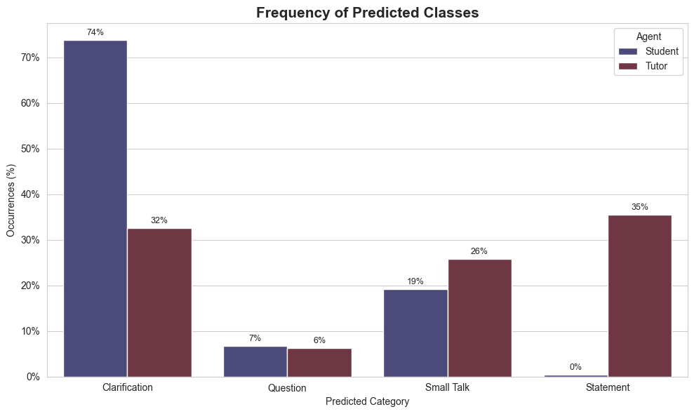

Guides
Below are two example workflows demonstrating how to use each module in the package to synthesize, classify, and visualize dialogue interactions between a student and tutor agent. There are two use cases: first for a feedback focused scenario, the second for a intention focused scenario. In practice, users are encouraged to incorporate real-world data where available, which may slightly alter certain steps in the pipeline.
Feedback Example
Generate Label Framework
The first example walks through the full pipeline for generating, classifying, and visualizing dialogue interactions focused on different feedback types: (Advice, Content, Encouragement, Explanation, Posed Question, Small Talk, Specificity, and Style).
First install the package:
pip install educhateval
Then import the framework generator:
from educhateval import FrameworkGenerator
Initialize the generator with your downloaded and loaded model (model_name) and adress of the locally hosted LM Studio API endpoint that handles generation requests (api_url), and generate labeled samples.
generator = FrameworkGenerator(model_name="llama-3.2-3b-instruct", api_url="http://localhost:1234/v1/completions")
# Generating the raw data
df_feedback = generator.generate_framework(
prompt_path="/outline_prompts/prompt_feedback.py",
num_samples=200,
csv_out="/data/labeled_feedback_data.csv"
)
# Filtering based on classifier agreement to ensure high-quality framework
filtered_df = generator.filter_with_classifier(
train_data="data/tiny_labeled_feedback.csv",
synth_data=df_feedback,
classifier_model_name = "distilbert-base-uncased"
)
Synthesize Interaction
Import and initialize the dialogue simulator:
from educhateval import DialogueSimulator
# choose either mlx or Huggingface (HF) backend depending on the host of the model
simulator = DialogueSimulator(backend="mlx", model_id="mlx-community/Qwen2.5-7B-Instruct-1M-4bit")
In this example a system prompt and seed message is given directly, see Templates for how to structure a YAML input instead.
# making the custom prompt as dict
custom_prompts = {
"conversation_types": {
"feedback": {
"student": "You are a student asking for feedback on your work.",
"tutor": "You are a helpful tutor providing focused, costructive feedback."
},
}
}
# setting prompt and seed msg
prompt = custom_prompts["conversation_types"]["feedback"]
seed_message = "I've written this paragraph, please help me polish it: flowers are nice and they grow in gardens. some are red or yellow. people give them on birthdays and stuff. bees like them too."
In this case the interactions of only one student is simulated. For an example where several student-tutor interactions are simulated and appended to a DataFrame look at the intention scenario.
df_single_feedback = simulator.simulate_dialogue(
mode="feedback",
turns=10,
seed_message_input=seed_message
system_prompts=prompt
)
Classify and Predict
Import the classifier and run prediction on the labeled, synthesized data. In this case only the tutor messages are of interest, as it is the feedback types provided by the llm that are being analyzed.
from educhateval import PredictLabels
predictor = PredictLabels(model_name="distilbert/distilroberta-base")
# Run the full prediction pipeline
annotaded_feedback = predictor.run_pipeline(
train_data=filtered_df,
new_data=df_single_feedback,
text_column="text",
label_column="category",
columns_to_classify=["tutor_msg"],
split_ratio=0.25
)
Visualize
Import the visualizer and plot results:
from educhateval import Visualizer
viz = Visualizer()
Generate plots - here focusing on the bar charts:
# Bar plot of class distributions
viz.plot_category_bars(
df=annotaded_feedback,
label_columns=["predicted_labels_student_msg", "predicted_labels_tutor_msg"],
use_percent=True,
title="Predicted Categories of Feedback",
palette="twilight"
)
Returns:

# Trend plot of predicted categories over turns
viz.plot_turn_trends(
df=annotaded_feedback,
student_col="predicted_labels_student_msg",
tutor_col="predicted_labels_tutor_msg",
title="Categories of Feedback over Turns",
show_ci=True
)

Intention Example
The second example walks through the full pipeline for generating, classifying, and visualizing dialogue interactions focused on intentions behind messages: (Clarification, Question, Small Talk and Statement).
First install the package:
pip install educhateval
Generate Label Framework
Import the framework generator:
from educhateval import FrameworkGenerator
Initialize the generator with your downloaded and loaded model (model_name) and adress of the locally hosted LM Studio API endpoint that handles generation requests (api_url), and generate labeled samples.
In this example a dictionary is provided as prompt.
See Templates for how to structure a YAML prompt input instead.
generator = FrameworkGenerator(model_name="llama-3.2-3b-instruct", api_url="http://localhost:1234/v1/completions")
# Dictionary of prompts
custom_prompt_dict = {
# CLARIFICATION
"Clarification": """<|im_start|>system
You generate a conversational sentence that seeks clarification or context.
It should be polite, concise, and appropriate for an educational setting. You never repeat yourself.
<|im_end|>
<|im_start|>user
Create a clarification sentence.
<|im_end|>
<|im_start|>assistant""",
# SMALL TALK
"Small Talk": """<|im_start|>system
You generate a short small talk sentence suitable in an casual setting. You never repeat yourself.
<|im_end|>
<|im_start|>user
Create a small talk sentence.
<|im_end|>
<|im_start|>assistant""",
# QUESTION
"Question": """<|im_start|>system
You generate a factual or thoughtful question that can be used in a conversation or educational setting. You never repeat the same question.
<|im_end|>
<|im_start|>user
Create a question.
<|im_end|>
<|im_start|>assistant""",
# STATEMENT
"Statement": """<|im_start|>system
You are a helpful and knowledgeable assistant in an educational setting.
You respond to student questions in a friendly and conversational tone, aiming to explain or clarify in one sentence.
Each response should:
- Address the question naturally, like a tutor or teacher would.
- Stick to one main idea or explanation per response.
- Avoid repeating previous answers or stating obvious facts.
- Don't write the question you are answering.
<|im_end|>
<|im_start|>user
Give a unique one-sentence answer to a new and different question.
<|im_end|>
<|im_start|>assistant""",
}
Now using the dictionary directly:
# Generating the raw data
df_4 = generator.generate_framework(
prompt_path=custom_prompt_dict,
num_samples=200,
csv_out="/data/labeled_training_data.csv"
)
# Filtering based on classifier agreement to ensure high-quality framework
filtered_df = generator.filter_with_classifier(
train_data="data/tiny_labeled_default.csv",
synth_data=df_4,
classifier_model_name = "distilbert-base-uncased"
)
Synthesize Interaction
Import and initialize the dialogue simulator:
from educhateval import DialogueSimulator
simulator = DialogueSimulator(backend="mlx", model_id="mlx-community/Qwen2.5-7B-Instruct-1M-4bit")
english_course configuration acts as the starting input for one student. The model responds over several turns, alternating between the student and tutor roles. This looped setup helps create a diverse set of interaction sequences, each grounded in a unique initiating prompt.
See Templates for how to structure your YAML seed input used here.
# Extract seed messages for the English course
english_seeds = seed_messages["english_course"]["seeds"]
n_seeds = len(english_seeds)
# Store all simulated dialogues
english_dialogues = []
for i, seed_message in enumerate(english_seeds):
df_single = simulator.simulate_dialogue(
mode="general_task_solving",
turns=8,
seed_message_input=seed_message,
custom_prompt_file=Path("prompts/my_custom_prompts.yaml")
)
# Add metadata
df_single["student_id"] = f"english_course_student_{i+1}"
df_single["course"] = "english_course"
english_dialogues.append(df_single)
# Combine all dialogues
english_course_df = pd.concat(english_dialogues, ignore_index=True)
Classify and Predict
Import the classifier and run prediction on your labeled and synthesized data:
from educhateval import PredictLabels
predictor = PredictLabels(model_name="distilbert/distilroberta-base")
# Run the full prediction pipeline
annotaded_df = predictor.run_pipeline(
train_data=filtered_df,
new_data=english_course_df,
text_column="text",
label_column="category",
columns_to_classify=["student_msg", "tutor_msg"],
split_ratio=0.20
)
Visualize Import the visualizer and plot results:
from educhateval import Visualizer
viz = Visualizer()
Generate summary tables and plots:
# Summary table of predicted categories
summary = viz.create_summary_table(
df=annotaded_df,
student_col="predicted_labels_student_msg",
tutor_col="predicted_labels_tutor_msg"
)
print(summary)
# Bar plot of class distributions
viz.plot_category_bars(
df=annotaded_df,
student_col="predicted_labels_student_msg",
tutor_col="predicted_labels_tutor_msg",
use_percent=True,
title="Frequency of Predicted Classes"
)
Returns:

And:

# Trend plot of predicted categories over turns
viz.plot_turn_trends(
df=annotated_df,
student_col="predicted_labels_student_msg",
tutor_col="predicted_labels_tutor_msg",
title="Category Frequencies over Turns",
show_ci=False,
)
Returns:

Lastly the tutor–student interaction patterns can be visualized as sequential category dependencies, here with a student focus. The x-axis represents the student's current input category, while each bar shows the distribution of tutor response types from the previous turn. This is possible when both student and tutor inputs are predicted and labeled.
# Dependency plot
viz.plot_history_interaction(
df=annotated_df,
student_col="predicted_labels_student_msg",
tutor_col="predicted_labels_tutor_msg",
focus_agent="student",
use_percent=True
)

Direct Wrap of Interactions
Instead of generating or using pre-existing interaction data, users can collect it directly using the package’s chat_ui wrapper.
his replaces the synthesizing interactions step above and is executed as follows:
pip install educhateval
From the terminal run:
chat-ui \
--api_url http://127.0.0.1:1234/v1/chat/completions \
--model llama-3.2-3b-instruct \
--prompt "You are a helpful tutor guiding a student." \
--save_dir data/logged_dialogue_data
Opens:

Find more detailed instructions in the Chat Wrap Tutorial.